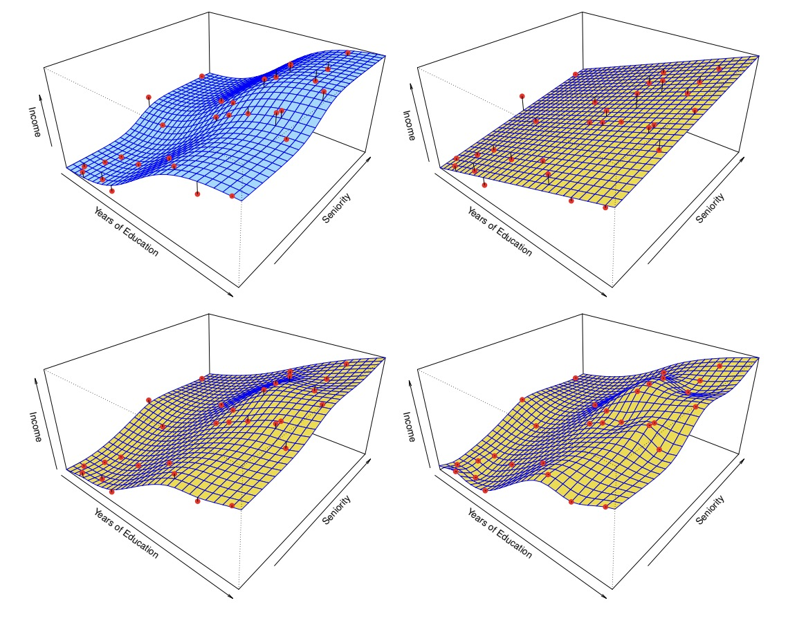
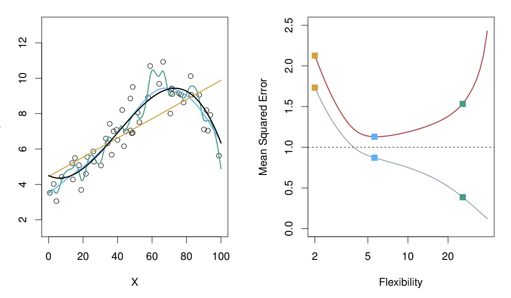

Machine Learning¶
Info
Some of the examples and sentences here are directly adopted from ISML, ESL, and COMP4432 Statistical Machine Learning lecture slides. The note is not complete and may have frequent modifications.
Statistical learning (统计学习) refers to learn from data, can be classified as supervised, semi-supervised and unsupervised:
- supervised (with labeled output): prediction, estimation
- unsupervised (without labeled output): clustering
- semi-supervised (large amount of unlabeled data and small amount of labeled data)
For prediction there are two types as well, regression (回归) refers to continuous or quantitative output value, otherwise would be classification (分类).
Linear regression is the simplest regression method by using linear equations to approximate a certain function.
Mathematical Formulations¶
\(n\): Number of distinct data points
\(p\): Number of features / predictors / variables
For instance, regarding Wage, there are 300 sample points where they are 10 factors like year, age, race, ... Then we have \(n = 300\), \(p = 10\).
We can use matrix \(\textbf{X}\) to denote the data, and vector \(\textbf{y}\) to denote output:
The rows of \(\textbf{X}\) refer to each data point, we can denote it as \(x_i\):
The columns of \(\textbf{x}\) refer to the collection of data points in terms of a certain feature, we can denote it as \(\textbf{x}_j\):
Therefore,
We can give this formula: $$ \textbf{y} = f(\textbf{X}) + \varepsilon $$ \(\textbf{y}\) is the observed output while \(\textbf{X}\) is the observed input, \(f\) is the ground truth function that maps \(\textbf{X}\) into the ideal output, there's an error between observed and ideal output, and we have the assumption that \(\mathbb{E}(\varepsilon)=0\).
A set of inputs \(\textbf{X}\) is always available but it is not always easy for us to obtain the corresponding \(\textbf{y}\). We denote \(\hat{\textbf{y}}\) as an estimate of \(\textbf{y}\), and \(\hat{f}(\textbf{X})\) an estimate of \(f(\textbf{X})\).
Basics¶
Reducible and irreducible error¶
Then with \(\mathbb{E}(\varepsilon)=0\) and an additional assumption that both \(\hat{f}\) and \(X\) is fixed, we have:
\(\mathbb{E}[f(X) - \hat{f}(X)]^2\) is the error that we could reduce by selecting the most appropriate model, but \(\text{Var}(\varepsilon)\) is the irreducible error.
Model choosing¶
To minimize the reducible error, we need to pick a suitable model to estimate model, there are two types of model, namely parametric and non-parametric.
For the parametric method, we first make an assumption about the form of the ground truth function e.g. linear. After the model has been selected, we use the training data to fit the model (train the parameters).
A simple example: we assume \(f(X) = \beta_0 + \beta_1 X_1 + \beta_2 X_2 + \cdots + \beta_p X_p\). The the model is trained to find the values of the parameters: \(\beta_0, \beta_1, \beta_2, \cdots, \beta_p\) s.t. \(Y \approx \beta_0 + \beta_1 X_1 + \beta_2 X_2 + \cdots + \beta_p X_p\). The most common approach is called ordinary least squares which we will introduce in next section.
Non-parametric methods do not make explicit assumptions about the function form of \(f\), so it is more flexible than non-parametric methods. Instead, they seek an estimate of \(f\) s.t. it gets as close to the data points as possible without being too rough or wiggly.

As the photo has shown, the top-left is the ground truth function, the top-right is the parametric liner model (which is underfitting in this case), the bottom-left is the fitted spline model, and the bottom-right is a rough spline model with zero errors on the training data (which is called overfitting).
The definition of underfitting (not flexible enough) is that it performs poor in both training and testing data, while the definition of overfitting (too flexible) is that it performs very well in training data but poor in the testing data. We will further illustrate this in the bias-varience tradeoff part.

The red curve is testing error and grey curve is training error. As you can see, when flexibility increases, the grey curve gradually fits into the noise, the training error reaches minimum point when flexibility equals to 5.
Note
Note that model flexibility is not always proportional to the number of parameters. This holds for linear regression though.
Although we have many available models, there is no free lunch in statistics, which means there doesn't exist the so-called best model for all cases. On a particular data set, one specific method may work best, but some other method may work better on a similar but different set.
Measuring the quality of fit¶
We typically use mean-squared-error (MSE) given by
There are train and test MSEs and our main interest is to choose the method that minimise test MSE.
To avoid the curve being too flexible, we normally use the smoothing spline method, where we add a special regularisation term:
\(\lambda\) is the tuning parameter, when it is zero, we could allow the intergal value to be very large, so the model can be very flexible i.e. \(y_i = \hat{f}(x_i)\), when it tends to infinity, as we want to minimize MSE, the model would be very rigid i.e. \(y_i = \hat{a}x_i + \hat{b}\). So we can adjust the flexibility of the model by tuning the parameter.
Bias & Variance tradeoff¶
As it is impossible for us to obtain all data, we could only obtain some training data \(D\), but we want the model to work for all possible scenarios, so we want to find \(\hat{f}\) to minimise
(\(\hat{f}(x;D)\) is the estimated function from the data set \(D\))
Notice
Actually we can take one additional expectation w.r.t. \(x_0\) here but it would make the formula too complicated.
Then we can derive the formula:
The first term is a constant. Inside the second term \(\hat{f}(x_0;D)\) is still a random variable. For the third term, \([f(x_0)-\mathbb{E}_{D}[\hat{f}(x_0;D)] \ | \ X = x_0\) is a constant but [ \mathbb{E}_{D}(\hat{f}(x_0;D)) - \hat{f}(x_0; D) | X = x_0] is a random variable.
Then we take expectation w.r.t. \(D\) on both sides and we got the third term equal to 0 since
And the final result is
This formula tells us that we need to balance both bias and variance instead of only focusing on minimizing bias.
Bias refers to the error that is introduced by approximating a real-life problem, which may ne extremely complicated, by a much simpler model. The formula is quite easy to understand, is the difference between the ground truth value and the predicted value.
Variance refers to the amount by which \(\hat{f}\) would change if we estimated it using a different training data set. Ideally the estimate for \(f\) should not vary too much between training sets. The formula is basically a slightly complex version of \(\mathbb{E}[(X - \mathbb{E}(X))^2]\).
For simple model, it has low variance but large bias. Example: \(Y = f(X) + \varepsilon\), we simply let \(\hat{f}(X) = 0\), then variance is 0, but bias is very large \(f(X)^2\). For very flexible model, it has high variance but low bias. Example: \(Y = f(X) + \varepsilon = 0 + \varepsilon\), where the ground truth function is \(0\), we let \(\hat{f}(x_i) = y_i\), which means it fits into the noise. Then \(\text{Var}(\hat{f}(x_i)) = \text{Var}(y_i) = \text{Var}(\varepsilon_i) = \sigma_i^2\), bias is \(f(x_i) - \mathbb{E}(\hat{f}(x_i)) = f(x_i) - \mathbb{E}(y_i) = 0\).
Regression¶
Simple Linear Regression¶
Multiple Linear Regression¶
least square solution brief mention of matrix calculus